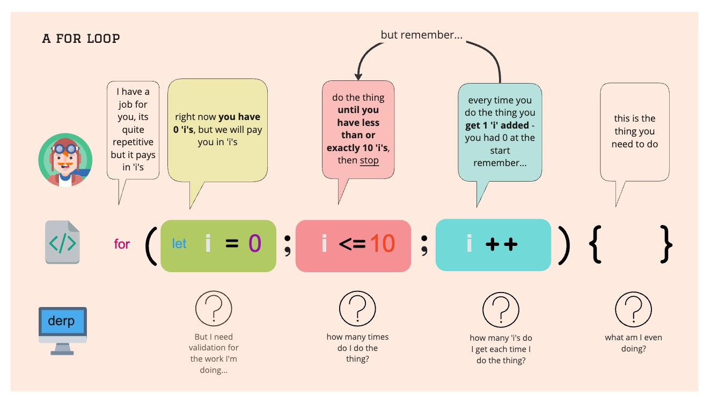
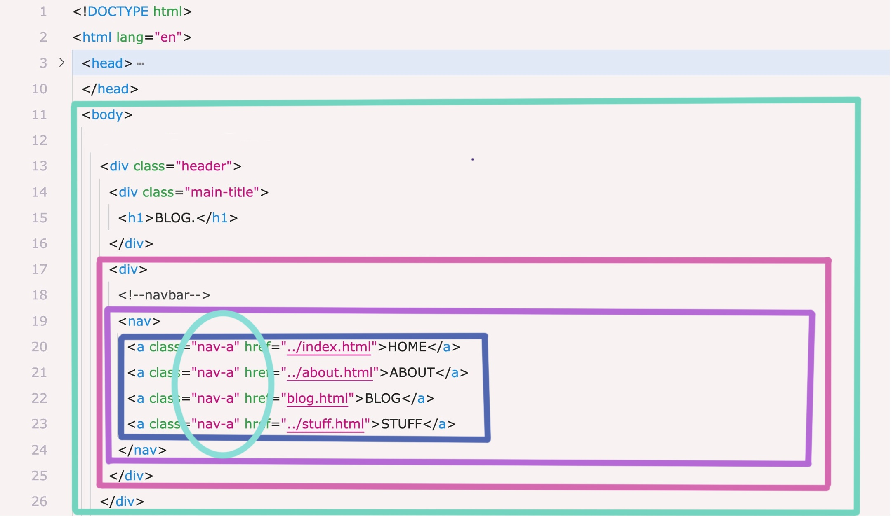
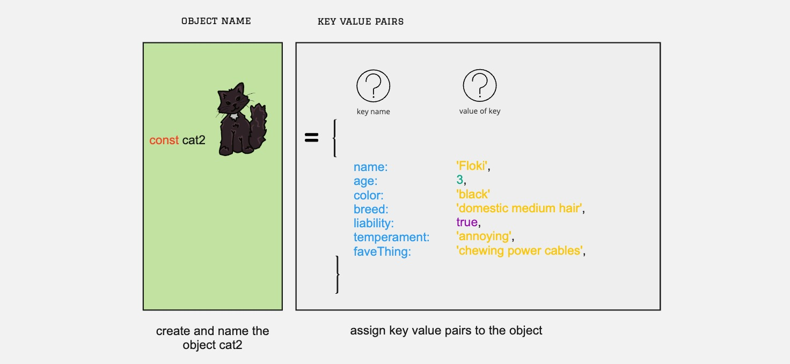
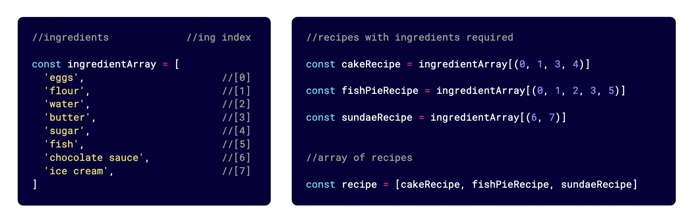
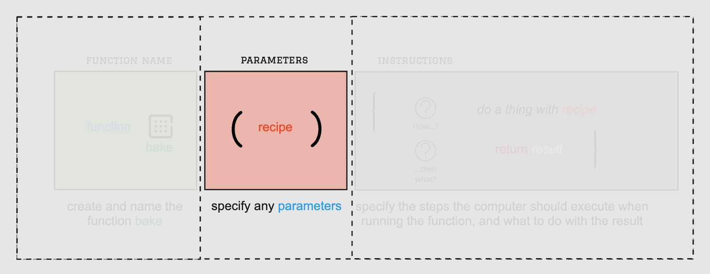
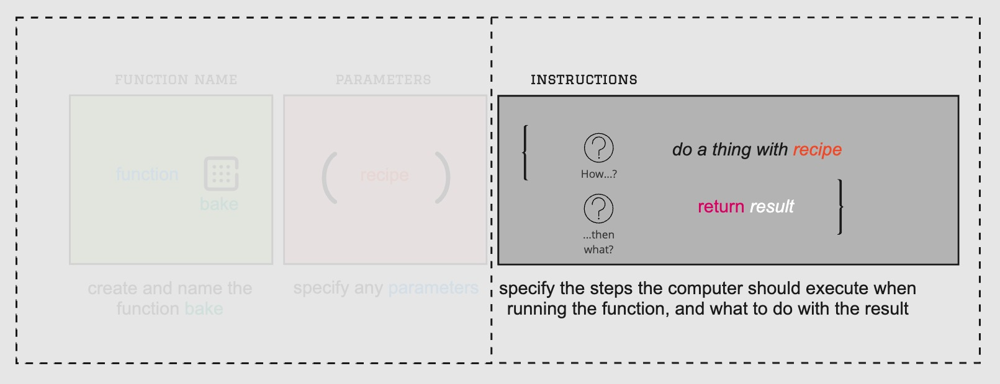
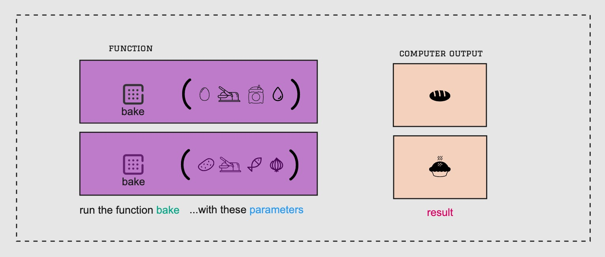

What is JavaScript & how does it relate to HTML & CSS?
HTML and CSS alone do not provide much of an exciting user experience on a web page. Like dating a beautiful, vapid person, they may look nice, and are able to get themselves out of bed and stand up straight, but socially it's like interacting with a spoon.
JavaScript is the substance of the page, or personality if you will, the thing that makes it exciting to interact with and makes you want to see it again. It not only responds to the questions you ask, but also asks them back and makes the interaction more enjoyable...
In short, you can have HTML and CSS with no JavaScript, but its now 2023 and people expect more from a webpage than a nice haircut a defined jawline.
Explain control flow and loops...
I'd imagine that due to computer programming being developed mainly in the western world, when a computer learned to read a file of code, its default is to read from top to bottom, left to right, one line at a time, like most of the people in those countries would if they could also read. This is known as...

Control Flow

As it is quite common to need the computer to run a line of code over and over though, we don't want to have to type out the line of code every time it needs to run or the file would be very long. We can in these instances use various structures to alter the control flow so that the computer will read some lines multiple times, or skip some lines. One type of structure that alters the control flow is...
Loops
A loop is a set of instructions inside of some curly brackets that follows some information about how many times to loop through those instructions. This information includes indicators to the computer about when to start, and when to stop.
The computer can be thought of as a derp that is being bargained with to do a repetitive task. In the example here the person is providing a starting index to the computer (i) that starts at 0, and for every time the computer runs through that set of instructions it is told to add 1 to the 0 index it started with. Then when it's got 10 indices it should stop running the loop and continue with the normal control flow.
For example if we wanted the computer to use its own initiative and feed the cats without having to literally ask every single time, we could give it a for loop that says to feed the cats until there is no more food left. Then, like magic it would feed the cats without being prompted until there is no more food left! Imagine...
Describe the DOM and explain how you may interact with it...
The Document Object Model (DOM) is a set of rules for HTML that allows multiple programming languages to add, change and remove elements and attributes of an HTML file.
Without the DOM it would be difficult to know where to look to find a certain element, but with DOM knowledge we know that an HTML file will contain objects such as a root element, with parent-child relationships. The more common elements (things) are things like, a head and a body that tend to be siblings. And then there are other more customised elements like divs, spans, p tags, and heading tags. Each of those 'things' can have attributes (characteristics) of their own; 'p' tags will contain a paragraph of text, and 'a' tags will contain a href link.
Each of these different 'things' that can be accessed are referred to as 'nodes'.

I've used my template blog HTML file as an example in the gif on this page. Within this HTML file there are various elements that are related to one another. An element will have a parent element at the least, all connecting back to the root element of the HTML.
JavaScript is one of those languages that uses the DOM interface to manipulate HTML framework and uses its own methods to call specific aspects of the HTML.
Most pages on the web will have some ability for a user to interact with it. Whether that's a text box for a troll to provide unwanted insight to a comment thread, or a button that changes your browser to an obnoxious unicorn theme, these things will require knowledge of the DOM in order for JavaScript to target the appropriate parts of the web page when prompted.
For example, lets pretend its the early 2000's and I'm wanting to customise my MySpace page by adding a button on my blog page that turns on a disco theme on the navigation bar and makes the buttons sparkle. We know the navigation bar is located in a div with the class "header", that has a child div containing a nav tag. Within this nav tag are the 4 anchor tags I've used for the navigation links to the different pages on this site.
As I've used anchor tags in multiple places on my site I will be wanting to target those specific anchor tags, which fortunately have a class called "nav-a".
The JavaScript could locate those anchor tags with the class "nav-a" and have the effect applied to those anchor tags only, when the button is turned on.

Explain the difference between accessing data from arrays and objects...
Objects and arrays are two different ways of storing data. They are both able to store more than one value, and both able to store more than one type of data. For example, both objects and arrays can contain numbers, booleans, strings, or even other objects and arrays.
Both objects and arrays can be manipulated and are considered mutable because they can change their value once it's been set.
That said, they are accessed and altered differently due to the way they are laid out.
Objects
Objects are things that have specific characteristics, like people, cats and cars. Each of these things can have multiple properties like name, colour, location, favourite food. Each of those properties can have different data types as values. For example, the age property may use a number data type, but the name may use a string data type.

These object properties are referred to as key value pairs, which means the property name e.g. temperament is referred to as the key; and this key has a string as its value e.g. "calm". These key values can be manipulated in a number of ways to either, access, add, remove or alter them.
For example, if the cat referred to in the object "cat2", by some miracle, happens to make it to his 4th birthday I might want to update the age property. I can do this by reassigning the property key age to the value 4.
By typing cat2.age = 4 I am using the dot notation method to alter the property, where the object name is followed by a dot, and the property in question is listed after the dot, followed by the specified new value.
Arrays
Arrays are lists of data types, and like objects can also include more than one data type but for this example we will use one type.
If we look at the array animals below we can see it shows an array of objects. Each of these objects have an index position associated with where it is located within the array. The index begins at 0, so the third object in the array rabbit1 would be at index number 2. This is important to note as this plays a key part when needing to call elements of the array at certain indices.
If we want to change the value of one of the data points in the array. Maybe we replace the object causing issues, cat2, with a new, less stressful object, fish1... we can use the following method... animals['cat2'] = 'fish1'
This method uses bracket notation, whereby the array name, followed by a set of square brackets containing the element to change is followed by the new value to assign in its place.
Explain what functions are and why they are helpful...
When you've already explained how to execute a simple task to someone once there's nothing worse than having to repeat yourself over and over again, right? Functions can be thought of as a set of instructions that you give the computer in order to perform a certain task in a certain order. The wonderful thing about computers is that when they've been told something once they can remember it indefinitely, so you would just need to tell them to go do the thing, and they'd know exactly what that means.
For example if you wanted to bake something you would need ingredients and a recipe.
To define the function you would first need to tell the computer that the following set of code is a function by typing the word function, and then you'd need to give it a name like bake
The next step is to specify any parameters that can be given. In this instance we would want the computer to look at the array of recipes and match the one that is specified when the function is called.
The computer then needs to understand what steps to take in each of those recipes / parameters in order to successfully have 'baked'. These instructions go inside a set of curly brackets and can include various other JavaScript concepts like loops that we mentioned above.
Once the steps have been run the computer needs to know what to do with the end result of the function. In this instance we've asked the computer to return 'result'.
Then when you want to call the function with certain parameters in it you just need to type out the function name, followed by any parameters in the brackets, and the computer will return the result.
As we've used the recipe array as the specified parameter, the array of recipes will contain various recipe names that each have different ingredients required so the computer knows what to use to bake.
A more complete example would be if we wanted the computer to run the bake function we created earlier with a specified recipe, the instructions in the function could run a conditional if else statement on the recipe we specified and the result would be based on the conditions of the if else statement.
*full disclosure: I am well aware that making an ice cream sundae isn't technically "baking", but its too late to change the name of the function now...
We've asked the computer to check the recipe name, and if it's the cakeRecipe, we want the computer to return 'cake' to the console. We've then asked it to check various other recipes and send its output accordingly. If none of those recipes in the conditional statement match what was given in the parameters then the computer knows to return the statement 'we don't have that.'